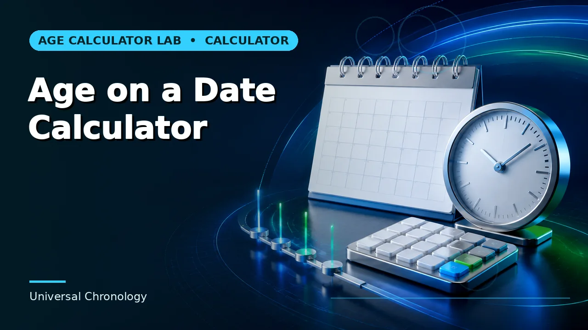
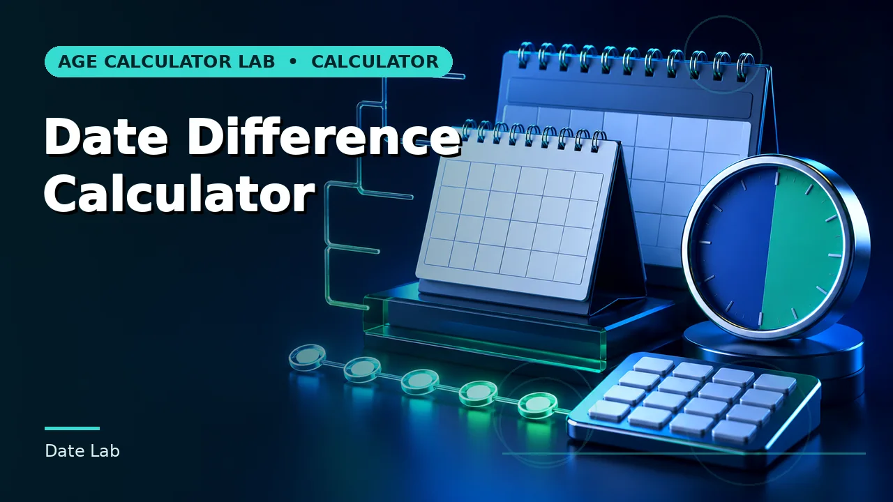

When Can I Get My State Pension?
In the UK, the exact date you can receive your State Pension is defined by primary statutory law rather than personal choice. Keep these essential principles in mind:
- Your State Pension age depends strictly on your date of birth. It does not change based on your income, marital status, or employment history.
- State Pension age is different from your personal retirement age. You are entirely free to retire earlier or continue working past your pension age.
- You can check your exact age through the official GOV.UK checker or calculate it quickly using the Age Calculator Lab tool.
- The legislated timetable currently includes increases from 66 to 67 (phasing through 2026–2028) and later from 67 to 68 (scheduled between 2044 and 2046).
State Pension rules can change following parliamentary legislation and periodic statutory reviews. Always verify your personal circumstances and official records using GOV.UK before finalizing retirement commitments.
What Age Can I Get My State Pension?
The UK State Pension age is the earliest chronological age at which you become legally eligible to claim state retirement benefits funded through the National Insurance system. It is governed by a series of Parliamentary statutes—chiefly the Pensions Acts 1995, 2007, 2011, and 2014.
Understanding this milestone involves several key facts:
- Statutory Determination: Your eligibility date is programmed strictly by your birth date. Unlike workplace or private pensions, there is no discretionary flexibility or employer discretion.
- Not Tied to Stopping Work: Reaching State Pension age does not force you to retire, nor does stopping work grant you early access to state pension funds.
- Distinct from Private Access Ages: Workplace pensions and personal SIPPs generally follow the Normal Minimum Pension Age (NMPA), which allows access from age 55 (rising to 57 on 6 April 2028).
- Transitional Timetable Schedules: Rather than jumping abruptly from age 66 to 67 on a single day, the legislation introduces phased monthly increments for people born between 6 April 1960 and 5 March 1961.
Want to calculate your State Pension age from your date of birth? Use our free interactive Pensionable Age Calculator to find your exact statutory eligibility date.
How Do I Check My State Pension Age?
Finding out exactly when you qualify for your State Pension can be accomplished through three distinct methods, depending on whether you require an immediate statutory date calculation or a comprehensive forecast of your monetary entitlement:
GOV.UK State Pension Age Checker
The government's official interactive tool provides your official State Pension age, your qualifying calendar date, and the date you can start claiming.
Check on GOV.UK ↗Pensionable Age Calculator
Our tool instantly applies the current statutory timetable and leap-year calendar rules to compute your precise qualification date, day of week, and milestone countdown.
Calculate Your Age Date →Check Your State Pension Forecast
Logging into your official National Insurance account reveals your personalized weekly forecast amount, contractual qualifying years, and contribution gap analysis.
View Official Forecast ↗Timing vs. Entitlement: Method 1 and Method 2 determine when you become eligible as a matter of calendar law. Method 3 determines how much money you can actually expect each week based on your lifetime contribution record.
State Pension Age vs State Pension Forecast: What's the Difference?
Many people mistake finding their State Pension age for checking their pension forecast. While both are essential for retirement planning, they serve completely different purposes:
| Feature | State Pension Age | State Pension Forecast |
|---|---|---|
| What it tells you | When you reach legal State Pension age (calendar date) | How much money you may receive per week / year |
| Based mainly on | Date of birth and enacted parliamentary legislation | Lifetime National Insurance record and qualifying years |
| Calculated by Age Calculator Lab? | Yes (applying the statutory statutory timetable) | No (requires private government records) |
| Official Government Source | GOV.UK State Pension age checker | GOV.UK Check your State Pension service |
| Planning purpose | Timing milestones & retirement timeline mapping | Cash flow budgeting & voluntary contribution decisions |
Age Calculator Lab does not have access to your personal National Insurance record. Our tools calculate calendar dates strictly from your input date of birth using public statutory timetables. To check your actual payment figures, credits, or missing contribution years, use the official GOV.UK Government Gateway portal.
How Does the UK State Pension Age Checker Work?
Whether using the official service or Age Calculator Lab's statutory tool, checking your State Pension age follows a four-step legal and chronological sequence:
Under this statutory workflow, once your date of birth is matched to the legal table, the software calculates whether you fall into a fixed cohort (such as reaching pension age on your 66th or 67th birthday) or a transitional monthly increment under Schedule 3 of the Pensions Act 2014.
Examples of When People Can Get Their State Pension
While our companion guide on UK State Pension Age by Date of Birth provides the exhaustive cohort-by-cohort timetable, reviewing a few key examples illustrates how the rules apply across different generations:
Born 15 June 1958
Individuals born between 6 October 1954 and 5 April 1960 have a fixed State Pension age of 66. Eligibility occurred exactly on their 66th birthday.
Born 10 August 1960
Born during the 1960–1961 transition window. Rather than waiting until age 67, statutory Schedule 3 sets pension age at 66 years and 4 months.
Born 20 September 1970
Individuals born between 6 March 1961 and 5 April 1977 have a statutory State Pension age of exactly 67 under the Pensions Act 2014.
Born 12 November 1982
Under the enacted Pensions Act 2007 timetable, those born from 6 April 1978 onwards qualify at age 68, subject to future parliamentary reviews.
Why Does State Pension Age Depend on Your Date of Birth?
You may wonder why someone born just a few weeks or months before you might receive their State Pension significantly earlier. There are three key legal reasons for date-of-birth structuring:
- Generational Legislation: Successive Parliaments have updated pension laws to reflect changing national demographics and rising average life expectancies. Each Act applies to cohorts reaching retirement age after specified cutoff dates.
- Gradual Implementation: To prevent "cliff-edge" unfairness where one worker retires at 66 and someone born the next day must wait until 67, lawmakers designed transitional schedules with phased monthly increments.
- Notice and Planning: Government policy principles require that individuals receive adequate advance notice of pension age increases so they can adjust private savings, workplace contributions, and career plans.
For the complete statutory timetable and birth cohort tables, read our comprehensive guide to UK State Pension Age by Date of Birth.
Can I Claim My State Pension Before State Pension Age?
No. Under UK law, you cannot claim or receive the State Pension early under any circumstances. Unlike some international systems (such as the US Social Security system, which allows early claiming at age 62 with permanently reduced benefits), the UK State Pension is strictly all-or-nothing until you reach your statutory age.
However, you can still stop working before your State Pension age:
- Private & Workplace Pensions: Under current UK tax rules, you can access defined contribution pensions and personal SIPPs once you reach the Normal Minimum Pension Age (currently age 55, rising to age 57 on 6 April 2028).
- Bridging Strategies: Many retirees fund the gap between early retirement and State Pension age using personal savings, ISA investments, or private pension drawdown.
- Ill Health: If severe ill health prevents you from working before State Pension age, you may qualify for incapacity-related benefits (such as Employment and Support Allowance or Personal Independence Payment), but you cannot draw the State Pension early.
Can You Work After Reaching State Pension Age?
Yes, absolutely. Reaching State Pension age does not require you to stop working or leave your employer. In 2011, the UK Government abolished the Default Retirement Age, making it unlawful for employers to force staff to retire purely because of age, except in rare roles with statutory physical requirements.
Continuing to work while at State Pension age offers substantial financial advantages:
- No Employee National Insurance: From the day you reach State Pension age, you no longer pay Class 1 Employee National Insurance contributions on your wages—giving you an immediate increase in take-home pay.
- Simultaneous Earnings and Pension: You can claim your State Pension while working full-time or part-time. However, your State Pension is treated as taxable income, meaning it is added to your earnings for Income Tax calculations.
- Opportunity to Defer: If you don't need the income immediately, you can choose to defer claiming your pension to earn higher weekly payments later.
Can You Delay Your State Pension?
When you reach State Pension age, you do not have to claim your pension immediately. Simply not responding to your claim invitation letter will automatically defer your claim until you choose to activate it.
Under the new State Pension rules (applicable to men born on or after 6 April 1951 and women born on or after 6 April 1953):
- Deferral Rate: Your State Pension increases by 1% for every 9 weeks you defer.
- Annual Equivalent: This equals approximately 5.8% for each full year of deferral.
- Minimum Period: You must defer for at least 9 consecutive weeks to qualify for an increase.
Example: If your full new State Pension is £221.20 per week, deferring for one full year adds roughly £12.83 per week for the rest of your life (subject to annual inflationary uprating). Whether delaying is financially advantageous depends on your overall health, tax bracket, life expectancy, and other retirement income. Consult the official GOV.UK guidance or an independent financial adviser before making deferral choices.
What Should You Check Before Claiming Your State Pension?
Before submitting your official claim, run through this practical eight-point verification checklist to protect your entitlement and prevent administrative delays:
State Pension Pre-Claim Checklist
State Pension Age vs Retirement Age
It is vital to distinguish between statutory benefit ages and career retirement milestones. While everyday conversation often treats them as identical, they operate under completely different rules:
| Term | Meaning & Governing Authority |
|---|---|
| State Pension age | The statutory chronological age at which you become legally eligible to claim the UK State Pension under Acts of Parliament. |
| Retirement age | The personal age at which you voluntarily choose, or plan, to stop working in paid employment. |
| Workplace pension age | The age at which an employer-sponsored occupational pension scheme permits scheme members to draw benefits under trust deed rules. |
| Private pension access age | The statutory Normal Minimum Pension Age (NMPA)—currently age 55, rising to 57 in April 2028—under which HMRC allows personal pension withdrawals. |
For a detailed breakdown of how these concepts interact, see our in-depth article: What Is Pensionable Age? Pensionable Age vs Retirement Age Explained.
Is State Pension Age the Same as Pension Age?
In casual discussion, people often say "pension age" as shorthand for "State Pension age." However, in legal and financial terminology, the distinction matters:
- "Pension age" is an umbrella term that could refer to your private scheme's Normal Retirement Date (NRD), the public sector pension age, or the earliest age you can touch your personal SIPP.
- "State Pension age" refers strictly to the government benefit managed by the Department for Work and Pensions (DWP).
- Scheme-Specific Rules: For example, someone in a Defined Benefit public sector pension scheme (such as the NHS or Civil Service) may have a normal scheme pension age linked directly to State Pension age, while their personal AVC pot may be accessible earlier. Always inspect the specific scheme documentation to know which "pension age" applies.
What Happens When You Reach State Pension Age?
Reaching your State Pension age marks a definitive legal transition. Here is what happens in practice:
- You Become Eligible to Claim: Eligibility does not mean automatic payment. You must actively claim your pension online, by telephone, or via postal forms.
- Employee NI Deductions Stop: You stop paying Class 1 Employee National Insurance contributions on earned wages from the exact day you reach State Pension age. Show proof of age (such as a passport or birth certificate) to your employer's payroll department if deductions do not automatically halt.
- Weekly Entitlement Determined: Your payment amount is finalized based on your National Insurance qualifying record up to the end of the tax year before you reach State Pension age.
- Tax Implications: While State Pension is paid gross without tax deducted at source, it counts as taxable income. HMRC adjusts your tax code on any other income (such as salary or private pension income) to collect tax due on your state pension.
Common State Pension Age Mistakes
Ensure your retirement plan is grounded in current law by avoiding these seven widespread misunderstandings:
Age 66 is currently the baseline for older cohorts, but millions born from 6 April 1960 onward will qualify between 66 and 67, or at 67, and later at 68.
Believing you must continue working until your State Pension date, or conversely assuming that stopping work will trigger state pension payments before you reach legal age.
Your State Pension age indicates timing only. The amount of money you actually receive depends on having at least 10 qualifying NI years (for any payment) and 35 years (for the full new State Pension).
Those born during 1960 and 1961 qualify in phased monthly increments rather than round birthday milestones. Checking an exact calculator avoids miscalculating by several months.
Relying on old guidance from before the Pensions Act 2011 or Pensions Act 2014, when female pension age was 60 and default male pension age was 65.
Thinking private pensions cannot be touched until State Pension age. Private pots can currently be accessed from age 55 (rising to 57 in 2028).
Expecting an independent calculation tool to access your private government tax account. Only GOV.UK holds your verified National Insurance history.
Find Your State Pension Age
Enter your date of birth to see the State Pension age and eligibility date calculated using the current legislated UK timetable.
For a different purpose — such as finding the calendar date when you reach a chosen pension age — use our Pension Age Date Calculator.
Frequently Asked Questions About State Pension Age
What age can I get my State Pension?
Your State Pension age depends strictly on your date of birth. Under current UK legislation, it is 66 for those born up to 5 April 1960, transitions month-by-month between 66 and 67 for births between 6 April 1960 and 5 March 1961, reaches 67 for births up to 5 April 1977, and is legislated to rise to 68 for births from 6 April 1978 onwards.
How do I find out my State Pension age?
You can check your exact State Pension age using the official GOV.UK State Pension age checker or use the interactive Pensionable Age Calculator on Age Calculator Lab for an immediate date-of-birth calculation.
Is State Pension age the same as retirement age?
No. State Pension age is the statutory milestone when you can first claim government pension payments. Your personal retirement age is entirely your choice—you can stop working earlier with private funds or continue working well past State Pension age.
Can I get State Pension at 66?
Yes, if you were born before 6 April 1960. Anyone born on or after 6 April 1960 faces a higher State Pension age under the phased transition to 67 established by the Pensions Act 2014.
Can I get State Pension at 67?
Individuals born between 6 March 1961 and 5 April 1977 reach State Pension age at exactly 67. Those born between 6 April 1960 and 5 March 1961 qualify at a transitional age between 66 years 1 month and 66 years 11 months.
Does my State Pension age depend on my date of birth?
Yes. UK State Pension age is determined entirely by your date of birth under primary Acts of Parliament, rather than your earnings, years in work, or private pension wealth.
Can I work after reaching State Pension age?
Yes. There is no compulsory retirement age in the UK. Furthermore, once you reach State Pension age, you stop paying Class 1 Employee National Insurance contributions on your earnings.
Can I claim State Pension early?
No. Under UK law, you cannot claim or receive the State Pension early under any circumstances, even with a reduced payment. Early retirement must be funded through workplace pensions, private SIPPs, or personal savings.
Can I delay my State Pension?
Yes. You do not have to claim your State Pension immediately upon reaching pensionable age. Deferring increases your weekly payments by 1% for every 9 weeks you delay (approx. 5.8% for each full year).
How do I check my State Pension forecast?
You can check your personal forecast by logging into the official 'Check your State Pension' service on GOV.UK using Government Gateway. This reveals how much you could receive based on your National Insurance qualifying record.
Does State Pension age tell me how much pension I will receive?
No. State Pension age tells you only WHEN you can claim. The AMOUNT you receive depends on your National Insurance contribution history (usually requiring 35 qualifying years for the full new State Pension).
Can State Pension age change?
Yes. The Pensions Act 2014 mandates independent reviews at least every six years. While reviews assess longevity trends and fiscal sustainability, any change to the statutory timetable requires new primary legislation passed by Parliament.
Official UK State Pension Resources
To verify your individual records, inspect qualifying years, or submit an official pension claim, consult these official UK Government services:
- GOV.UK — Check your State Pension age ↗: The official government service to determine your legal State Pension date.
- GOV.UK — State Pension age timetable ↗: The statutory schedules enacted under primary legislation.
- GOV.UK — Check your State Pension forecast ↗: Log in to inspect your personal National Insurance record and forecast.
- GOV.UK — Claim your State Pension online ↗: Official portal for submitting your claim once within 4 months of State Pension age.
Age Calculator Lab is an independent informational and calculator website. It is not affiliated with or operated by the UK Government or the Department for Work and Pensions. Rules last verified: September 2026. For personal National Insurance records and binding state pension forecasts, visit GOV.UK.
How We Calculate State Pension Age
Our tools and guides adhere to rigorous editorial and mathematical methodology:
- Statutory Timetable Implementation: Calculations are programmed against enacted primary UK legislation (Pensions Acts 1995–2014) rather than rough approximations.
- Precise Date Boundaries: Leap years, irregular month lengths, and Section 26(7A) end-of-month calendar rules are strictly accounted for in date logic.
- Regular Legislative Verification: Timetables are regularly audited against official DWP releases and statutory reviews.
- Clear Distinction of Scope: We clearly distinguish between statutory calendar milestones and personal monetary forecasts requiring National Insurance records.
- Rules Last Verified: September 2026.
Pension legislation and timetables can change following future reviews. Always verify your personal circumstances and the latest rules using GOV.UK before committing to retirement choices.
Related Age & Retirement Calculators
Explore our specialized chronological and retirement calculators:



